Accepted · SCF 2026 Poster
Automatic Lens Placement for Personalized 3D Printed Eyewear
¹ University College London ² University of St. Gallen ³ Adobe Research
Text reproduced from the supplied manuscript. PDF line breaks and layout have been adapted for the web.
Overview
From the manuscript: Abstract · View PDF page 1 ↗
The growing need for comfortable eyewear, from prescription frames to AI-enabled glasses, increases the demand for personalized eyewear fitting for different facial morphologies. However, customization is challenging because each custom design must coordinate lens alignment, nose-pad contact, and frame geometry. We propose a pipeline that automatically aligns the lenses with the pupils. Specifically, we reconstruct a 3D face model from smartphone camera images and extract facial landmarks. We use the pupil landmarks to compute the Interpupillary Distance (IPD) to determine the lens positions. Then we refine the frame mesh using lattice-based deformation. We validate our method by manufacturing a personalized 3D printed eyewear prototype for three test users. All three test users report a comfortable fit, neither too loose not too tight.
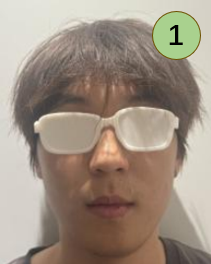
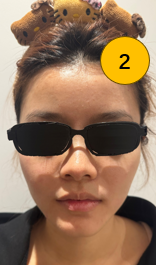
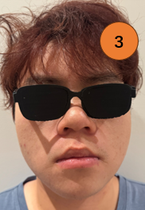
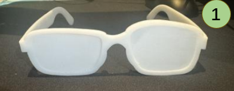
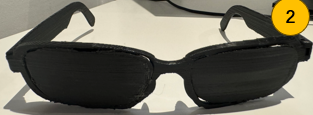
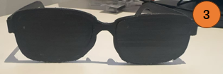
Method
From the manuscript: Section 3 · Personalized Eyewear Pipeline · View PDF page 1 ↗
We combine smartphone-based 3D face reconstruction with facial landmark detection to position lenses and nose pads, followed by interactive frame refinement. Figure 2 shows the facial model, which is reconstructed from multiple images, with the integrated eyewear geometry.
3D Face Model Reconstruction
For each test user, we used a smartphone camera and took 23 sequential images covering an area from the left to the right side of their faces. Kiri Engine [11] reconstructs a textured 3D facial model from the captured images. We then rescaled the imported model into Blender [3] to match the actual size (height 192mm, width 173mm, depth 262mm) of the user’s head that we measured with an actual ruler.
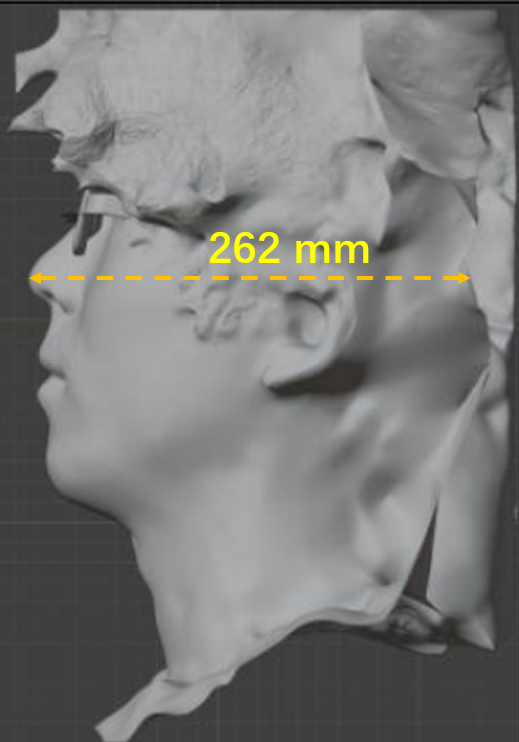
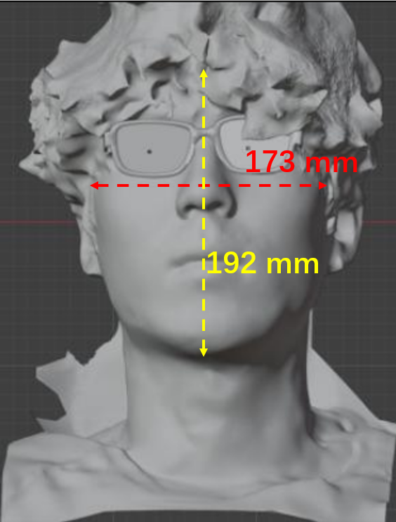
Landmark Detection
As show in Figure 3 MediaPipe [7, 15] detects iris and facial landmarks in each image and returns normalized 2D coordinates. To obtain these landmarks, We render the reconstructed face in Blender from five orthographic views at yaw angles of −25°,−15°,0°,15°, and 25°, see Supplementary material Figure 4. We project selected 2D landmarks onto the face mesh by casting rays from their corresponding positions on the orthographic camera plane along the viewing direction. For each eye, the coordinate-wise median of valid intersections across views gives a surface-based 3D reference, not a direct measurement of its anatomical center.
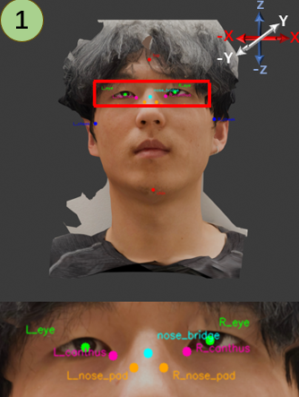
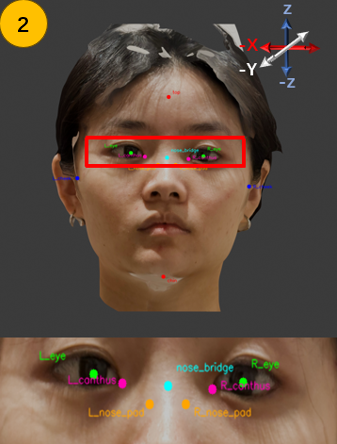
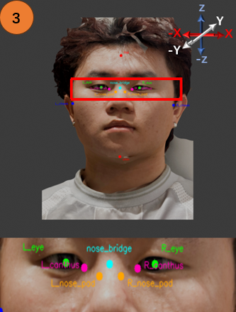
Lens and Nose-Pad Positioning
We calculate the image-derived IPD from the distance between the two eye reference points obtained by the landmard detection process. Then align the center of each lens’s bounding box horizontally and vertically with its corresponding eye reference. We choose the eye relief as 16 mm in the design of near-eye-displays [16]. We place this center 16 mm in front of the reference along the scene’s negative Y-axis. We estimate initial nose-pad locations from the inner eye corners and the nose-bridge landmarks, then refine them against the reconstructed nose surface. The script automatically moves each pad toward the nose in small steps. If it detects cheek contact, the script reverses the last inward step, raises the pad slightly, and repeats the approach. When it detects nasal-side contact, the script reverses the final inward step and stops. The script limits the number of search steps and checks the final position for remaining overlaps.
Frame Deformation
We keep the lenses fixed as reference geometry and refine the surrounding frame in Blender [3]. Manual mesh editing allows us to translate, rotate, or locally reshape the rims, bridge, hinges, temples, and nose-pad area. For broader shape adjustments, we place a lattice cage around the frame or a selected region and manually edit its control points to bend or reshape the enclosed geometry towards the fixed lenses.
Collision Detection
After lens and nose-pad placement, we use Bounding Volume Hierarchy (BVH) queries [2] to report remaining overlaps and approximate minimum surface distances between these components and the reconstructed face. These final diagnostic checks do not move the lenses or modify the frame.
Numbered literature references and Supplementary Figure 4 follow the manuscript. View the reference list in the PDF ↗
Results and Discussions
From the manuscript: Section 4 · View PDF page 2 ↗
The image-derived IPD values for test users 1, 2, and 3 are 69.58 mm, 69.41 mm, and 64.89 mm, respectively. Both lenses reach the target geometric eye relief of 16 mm in all three models shown in Figure 1. A sample assessment from test user 1 reveals the following technical details: MediaPipe returns usable landmarks for all five rendered views. Neither nose pad has reported BVH overlap pairs; their approximate minimum face distances are 0.055 mm (left) and 0.206 mm (right). The left and right lenses have zero and 190 overlapping triangle pairs, with approximate minimum face distances of 0.12 mm and 0.01 mm, respectively. Visual inspection suggests that the right-lens overlaps mainly involve reconstructed hair and scan artifacts. The collision test treats these regions as rigid mesh geometry and does not model hair deformation. These overlaps remain diagnostic warnings and do not by themselves establish whether physical contact is acceptable. Overall, all three test users report a comfortable fit, neither too loose nor too tight. During a brief wearing demonstration for photography, test user 1 reports appropriate nose-pad positioning, no pressure from the temples, and a stable fit without manual readjustment. Test user 2 describes the glasses as comfortable and reports no slippage during wear. This test user also considers the lens size appropriate. Test user 3 reports that the overall wearing experience feels similar to wearing his usual glasses and considers the lens angle suitable.
Limitations
Reconstruction noise, missing surfaces, and uncertainty in the approximate head measurements can affect landmark projection and component placement. We use surface-based eye references and estimated nose-pad contact locations, while frame refinement requires manual judgment. Beyond the three test users, for generalization of our method, more studies on diverse populations are required.
Conclusion
Although hurdles remain in our implementation, our work focuses on addressing the customization problem in eyewear by connecting individual facial geometry with personalized frame design. Our workflow enables designers to use smartphone-based facial reconstructions to guide lens placement automatically, and adapt the surrounding frame while keeping the lenses fixed. This provides a path from individual facial geometry to physical eyewear prototypes, combining geometric guidance with the flexibility of interactive refinement. Our pipeline still rely on partial manual frame adjustments, identifying a fully automatic pipeline remains as a future work. Another direction is to extend the approach to personalized AR glasses with integrated eye tracking for gaze-based interaction, such as selecting virtual objects. This extension would require evaluating how IPD-based alignment, changes in lens spacing, and frame slippage affect gaze-estimation accuracy and calibration stability. More test users should also assess alignment accuracy and long-term wearing comfort.
Citation
From the manuscript: ACM Reference Format · View PDF page 1 ↗
Qian Liu, Ziyang Chen, Kenan Bektaş, Mustafa Doga Dogan, and Kaan Akşit. 2026. Automatic Lens Placement for Personalized 3D Printed Eyewear. In Draft ACM Conference Submission, 2026, City, Country. ACM, New York, NY, USA, 3 pages.
The supplied PDF contains draft venue and location placeholders ("Draft ACM Conference Submission" and "City, Country"). They are retained here to match that file; this is not a finalized publication citation.